Project Individueel - Concept dagbesteding en motivatie
Algemene informatie
Leerjaar: 1
Blok: 4
Cijfer: 8
Gebruikte tools: Illustrator en XD
De opdracht
Vanwege de coronamaatregelen was dit project vanuit eigen interesse. Er mocht een eigen opdracht verzonnen worden. Ik had gekozen voor het creëren van een concept die ervoor zorgt dat je je dag nuttig besteedt en motivatie geeft voor wat je nog moet doen op een dag en wat je nog wil doen op een dag. Hierbij wilde ik me ook verdiepen in hoe mensen een gezond ritme kunnen houden en hoe de motivatie om thuis aan de slag te gaan optimaal kan worden.
Het proces
Ik heb eerst vooronderzoek gedaan naar het onderwerp / focus van het project om vervolgens hoofd- en deelvragen op te stellen met bijpassende methodes. Daarnaast heb ik onderzoek gedaan naar de doelgroep. Ik heb allereerst gekeken welke doelgroep het meeste moeite heeft met de corona maatregelen. Ik heb deskresearch en User Trips gedaan, waardoor ik uiteindelijk een persona en storyboards heb samengesteld. Daaropvolgend heb ik een happy flow gemaakt en een aantal wireflows. Uiteindelijk heb ik een low-fi, me-fi en hi-fi prototype gemaakt.
De oplossing
Als oplossing van de opdracht heb ik een prototype ontwikkelt die een planning kan maken op basis van verschillende factoren, zoals 'genoeg sporten', 'buiten zijn', 'goede nachtrust, etc. Ook kan de gerbuiker kiezen wat hij/zij op een dag wil doen en hoelaat hij/zij ongeveer dagelijks wil opstaan. De planning wordt gemaakt en kan goedgekeurd worden door de gebruiker om vervolgens te gebruiken. Om ervoor te zorgen dat de gebruiker niet zomaar stopt met de planning (motivatie verliest), heeft de app de functie dat er motiverende uitspraken tevoorschijn komen en de gebruiker 'geconfronteerd' wordt als ze toch stoppen. Dit vanwege het feit dat uit onderzoek bleek dat dit de doelgroep zou motiveren.
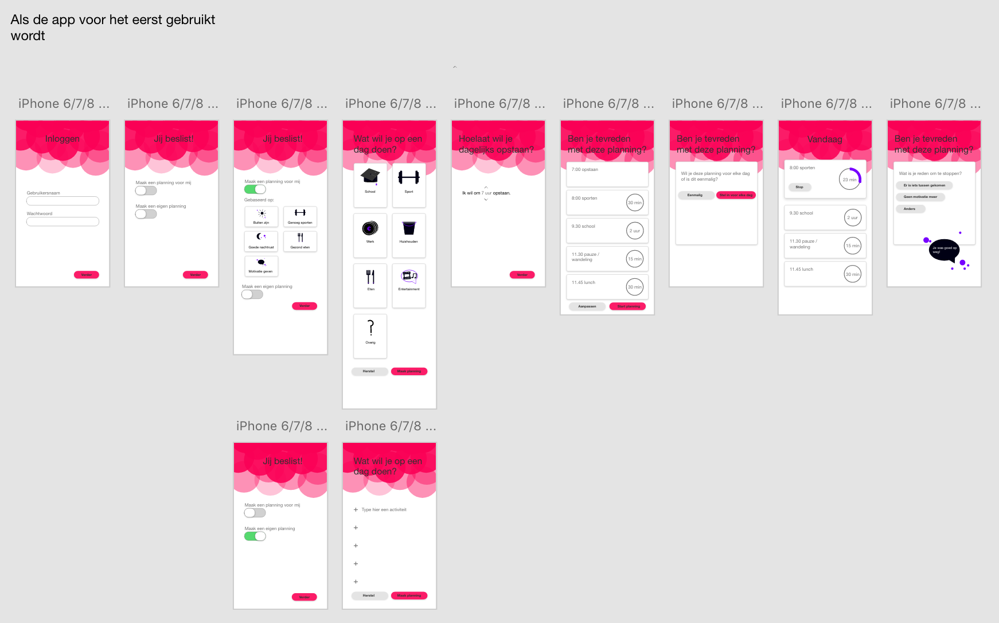
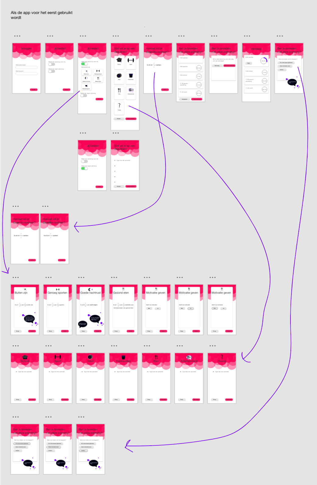
Visual Interface Design - Visual design voor interface bibliotheek
Algemene informatie
Leerjaar: 1
Blok: 3
Cijfer: 7,7
Gebruikte tools: Illustrator, Photoshop en XD
De opdracht
In het eerste jaar van mijn opleiding kreeg ik het vak Visual Interface Design. Bij dit vak heb ik de opdracht gekregen om een visual design te maken voor een interface voor het zoeken van één of meerdere boeken uit de schoolbibliotheek. Hierbij was de doelgroep 'scholieren uit het Voortgezet Onderwijs onderbouw (leeftijd 12 tot 15 jaar). Het ontwerp moest in de huisstijl van de Bibliotheek.nl, maar moest wel aangepast worden voor de doelgroep, de toepassing en de context.
Het proces
Allereerst heb ik onderzoek verricht over de doelgroep. Welke producten/apps gebruikt de doelgroep al en hoe werken deze?, Hoe ziet de vormgeving?, etc. Daarnaast ben ik op zoek gegaan naar verschillende insights over de doelgroep en inspiratie uit hun belevingswereld. Hierop aanvullend heb ik een user trip gedaan bij verschillende apps. Eenmaal genoeg informatie over de doelgroep, ben ik overgegaan naar het analyseren van de huisstijl van de Bibliotheek.nl. Uiteindelijk heb ik vier prototype versies gemaakt (low-fi op papier, low-fi, me-di en hi-fi), waarbij gelet is op de "Principles of User Interface Design".
De oplossing
Na veel itereren is dit mijn definitieve prototype geworden (zie afbeeldingen rechts). Door het onderzoek naar de doelgroep, heb ik de designkeuze gemaakt om een prototype te maken waarin aan de gebruiker een aantal vragen worden gesteld die hij of zij kan beantwoorden om tot een passend boek te komen. Door het onderzoek van de doelgroep, ben ik ook uitgekomen op de verschillende kleuren. Daarnaast is uit mijn onderzoek gebleken dat de doelgroep veel ervaring heeft met het swipen. Vandaar dat dit ook verwerkt is in mijn oplossing. De huisstijl van de Bibliotheek.nl is terug te zien in de vorm van de achtergrond en de kleur van de buttons.
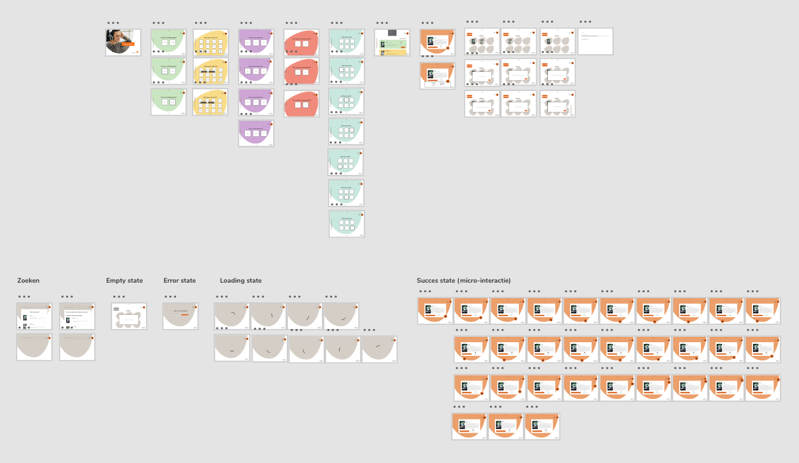
User Centred Design - UX-verbetering
Algemene informatie
Leerjaar: 1
Blok: 2
Cijfer: 8,3
Gebruikte tools: Illustrator
De opdracht
Bij dit eerstejaars vak kreeg ik de opdracht om een visueel voorstel te maken voor een UX-verbetering van een product. Dit product was het koffiezetapparaat op de locatie van de doelgroep AMFI studenten(Hogeschool van Amsterdam).
Het proces
Vooraf moest er gebruikersonderzoeken naar de doelgroep/gebruikers worden uitgevoerd. De doelgroep waren AMFI studenten die koffie of thee haalden bij het koffiezetapparaat. Door middel van verschillende technieken en methodese konden de problemen, frustraties en kansen achterhaald worden. Ik heb uit interviews inzichten gehaald over koffie/thee momenten. Vervolgens heb ik een User Trip verricht en de doelgroep geobserveerd en uiteindelijk hiervan storyboards gemaakt. Dit onderzoek heb ik omgezet naar een Affinity Map, Empathy Map, Persona en gebruikerseisen. Hier vanuit heb ik een UX-ontwerpverbetering opgesteld, waardoor de gebruikservaring van de klant met het koffiezetapparaat kan verbeteren voor de doelgroep.
De oplossing
Ik heb uiteindelijk een posterpresentatie opgeleverd, waarin de samenhang van het onderzoek (triangulatie), de persona en mijn visueel voorgestelde UX-verbetering worden behandeld.
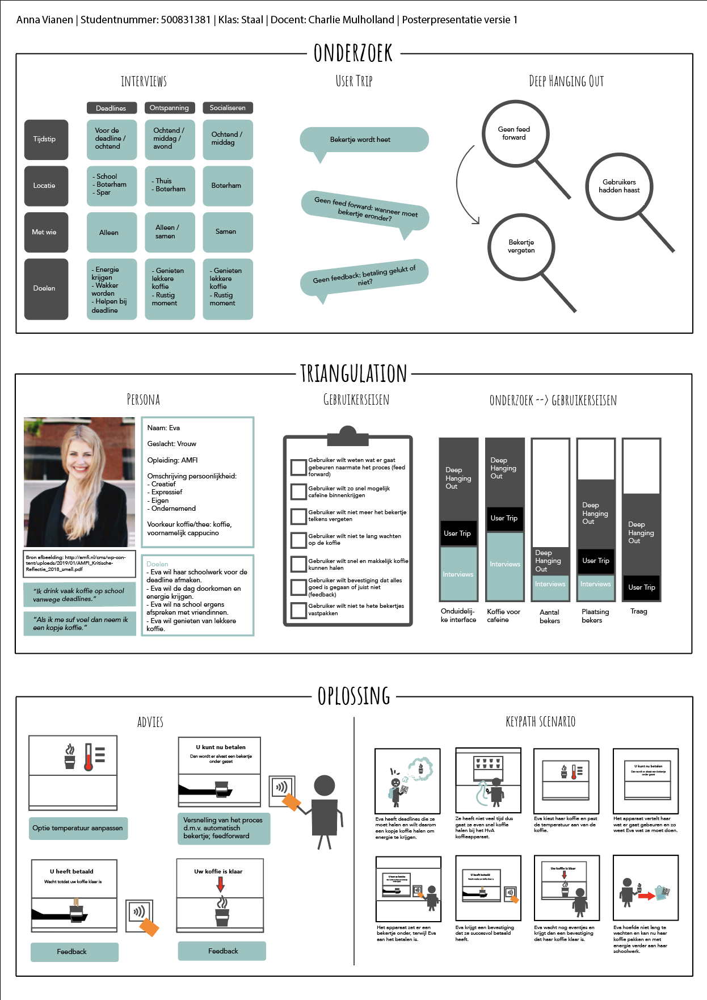
Project Individueel - Totaalervaring tussen NS en Too Good To Go
Algemene informatie
Leerjaar: 1
Blok: 3
Cijfer: 6,3
Gebruikte tools: Illustrator, Xd en InDesign
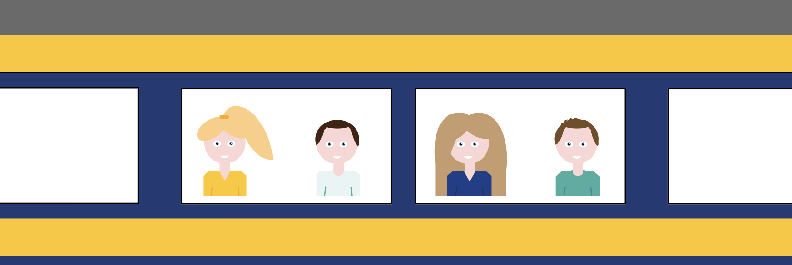
De opdracht
Bij dit project kreeg je een case toegedragen. Bij mijn case ging het om de samenwerking tussen de NS en Too Good To Go. De opdracht was om een totaalervaring te ontwikkelen voor de samenwerking tussen de NS en Too Good To Go, waarbij het doel is om treinreizigers bewuster te maken van voedselverspilling. Ook moesten de treinreizigers kennis maken met de Too Good To Go-applicatie. Daarnaast waren er ook nog een aantal randvoorwaarden aan verbonden, zoals geen hinder in het treinverkeer veroorzaken.
Het proces
Om tot een uiteindelijke oplossing te komen voor deze case, moest er een Plan van Aanpak komen, waarbij ik vooronderzoek heb verricht om zo tot een ontwerprichting en Personal Design Challenge te komen. Deze Personal Design Challenge heb ik beantwooord door middel van deelvragen waarbij ik verschillende methodes heb gebruikt als onderzoek. Hieruit heb ik een specifieke doelgroep gekozen, waarvan uit onderzoek bleek dat zij het meeste voedsel verspillen. Dit zijn gezinnen met jonge kinderen. Ik heb hierna onder andere onderzoek gedaan naar welke manieren ervoor kunnen zorgen dat de doelgroep bewuster wordt van voedselverspilling, welke vorm van digitaal component de doelgroep aanspreekt en op wat voor manieren kennis overgebracht kan worden. Uiteindelijk ben ik tot een spelconcept gekomen, waarbij rekening gehouden is met zoal kind als ouder.
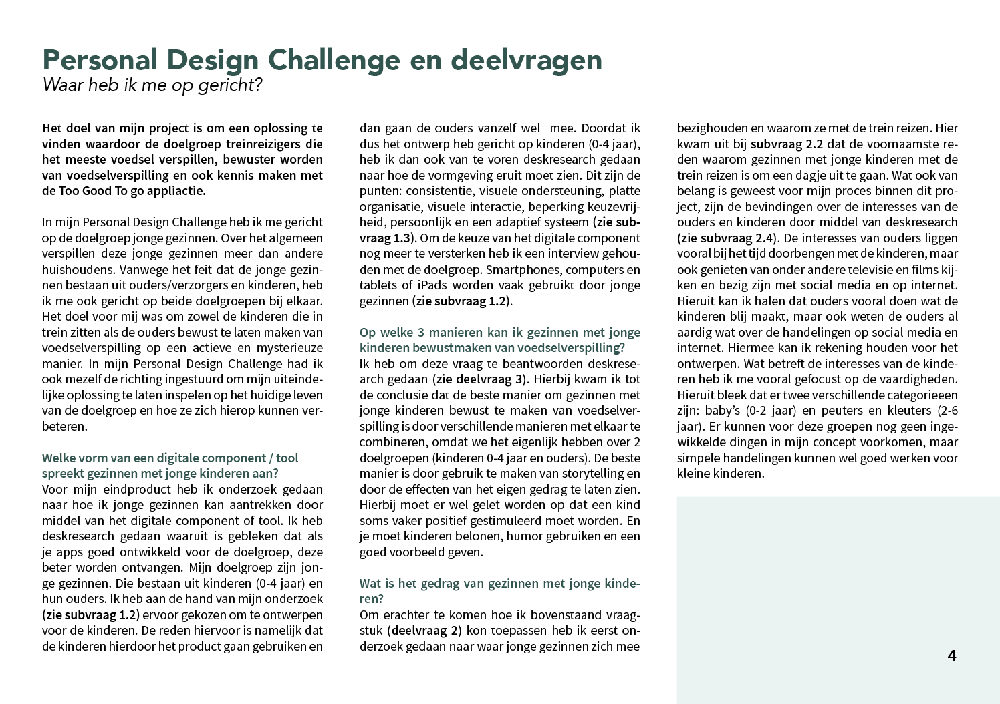
De oplossing
Als oplossing heb ik dus een spelconcept. Dit speelt zich af in de trein zelf. De opdracht was echter om een totaalervaring te ontwikkelen. Vandaar dat de oplossing begint voordat de doelgroep zich in de trein bevindt. Door middel van geanimeerde stukjes voedsel met gezichtjes (wat gebleken is uit mijn onderzoek dat gezichtjes/karakters de kinderen aanspreekt) worden de gezinnen geleid naar de trein. Dit komt ook terug in de trein, waar de gezinnen geleid worden naar de tafel met het spel. Door middel van een touchscreen in de tafel kan het gezin een spel spelen over voedselverspilling. De kinderen en ouders moeten tegen elkaar strijden om de geanimeerde stukjes voedsel te redden. Tot aan het eindstation kunnen de gezinnen met elkaar de strijd aangaan wie het meeste voedsel heeft gered. Voordat het gezin het spel start, kunnen ze aangeven wat hun eindbestemming is. Als ze dan bijna bij die bestemming zijn, wordt het gezin gewezen op het probleem van voedselverpilling en wordt de Too Good To Go appplicatie voorgesteld.
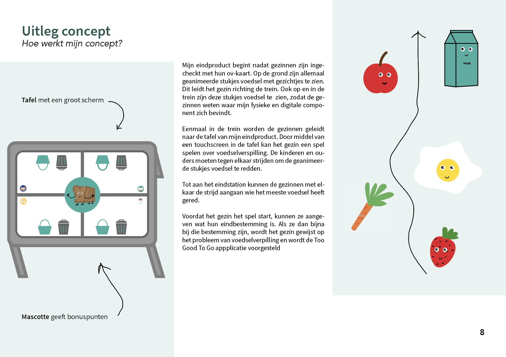
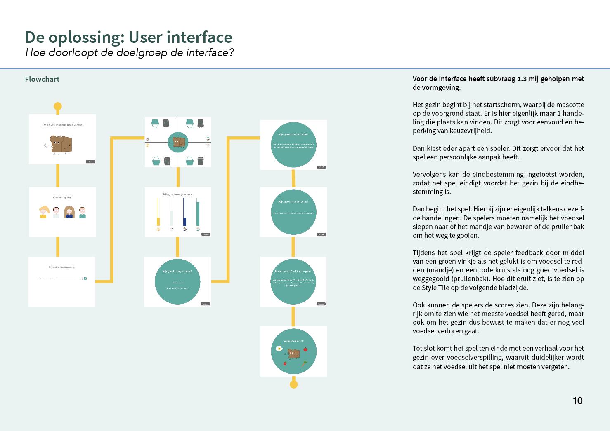
Project Web - Multi-device ontwerp
Algemene informatie
Leerjaar: 2
Blok: 2
Cijfer: 6,5
Gebruikte tools: Illustrator en Xd
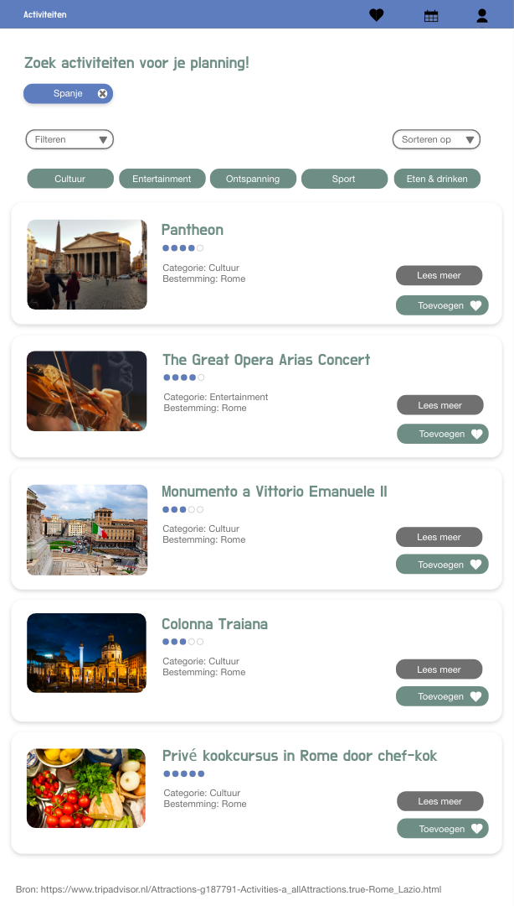
De opdracht
Bij dit project was de opdracht om een ontwerp te ontwikkelen die op verschillende resoluties hanteerbaar was. Dit zou gaan om een Multi-Device appliacatie/website voor op reis. Welke functionaliteiten en doelstellingen dit ontwerp moest hebben, moest blijken uit onderzoek dat verricht moest worden.
Het proces
Een Multi-Device website voor op reis is een breed begrip. Vandaar dat er eerst gezocht moest worden naar wat de mogelijkehden zijn qua dataverzameling en wat de wensen en behoeften zijn van de gebruiker. Ik heb dus onderzoek gedaan naar api's en daarnaast ook interviews afgelegd met reizigers om zo tot een Customer Journey te komen en een User Scenario te kunnen schrijven. Vanuit hier ben ik doorgegaan op het maken van wirframes voor de eerste versie van het prototype.
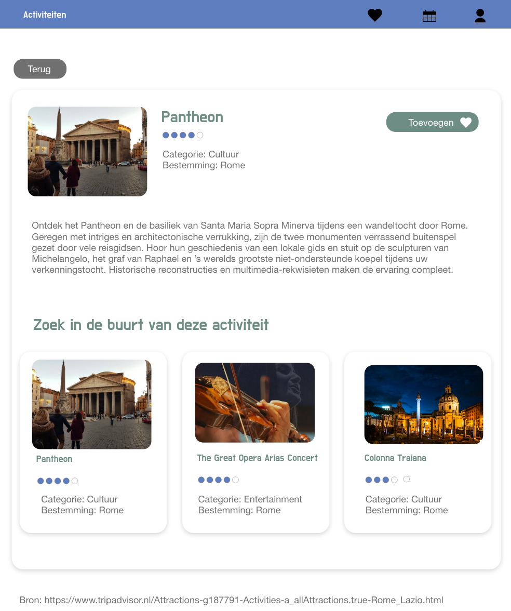
De oplossing
Ik heb uiteindelijk een website gemaakt voor reizigers die irritaties ondervinden bij de voorbereiding van een reis. Hierbij ging het voornamelijk om het plannen van de activiteiten. Vanuit dit probleem heb ik een concept bedacht die ervoor zorgt dat de gebruikers activiteiten kunnen zoeken, filteren en bewaren die bij hun het beste passen. Daarnaast is er de functionaliteit dat er een planning gemaakt kan worden op basis van de 'favorieten' van de gebruiker. Bij deze planning wordt er rekening gehouden met de afstand tussen de verschillende activiteiten en het soort activiteit (zoals entertainment, eten en drinken, etc). De gebruiker heeft ook de keuze om deze planning aan te passen. Als alles naar wens is, is de planning ook te gebruiken op mobile device.
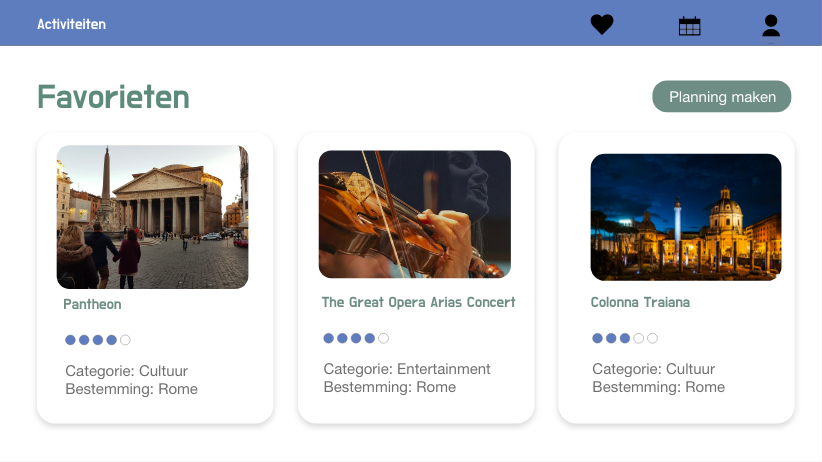
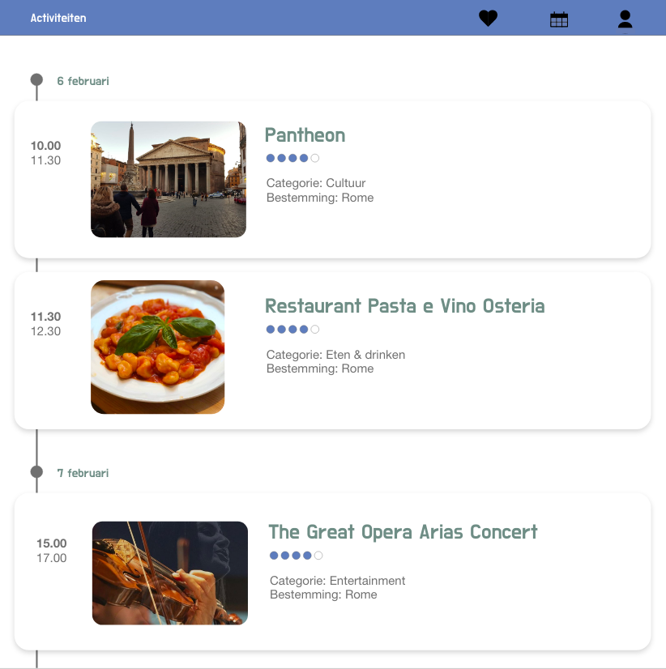